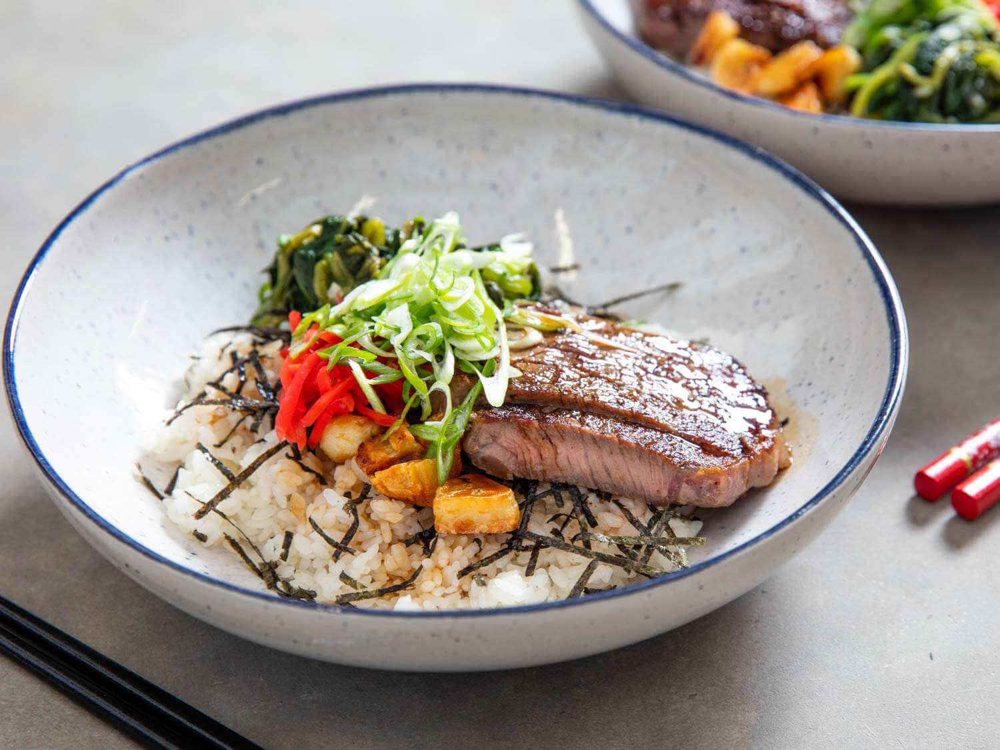

Crafting Culinary Comfort: A Guide to Homemade Donburi Bowls

Introduction:
Donburi, a staple of Japanese comfort food, has captured hearts
worldwide with its simplicity, versatility, and satisfying combination
of rice and flavorful toppings. While you may often enjoy donburi at
your favorite Japanese restaurant, there's a special joy in creating
these comforting bowls at home. Join us on a culinary adventure as we
explore the art of making homemade donburi, where creativity meets
tradition in every mouthful.
Ingredients for Homemade Donburi:
Short-Grain Japanese Rice:
-
The foundation of any donburi bowl, providing a sticky and
slightly sweet base.
Protein:
-
Options include thinly sliced beef (gyudon), breaded and fried
pork cutlets (tonkatsu), or marinated chicken (oyakodon).
Vegetables:
-
Sliced onions, scallions, mushrooms, and other vegetables add
texture and flavor.
Equipment:
Medium Saucepan:
- For cooking rice and simmering the donburi sauce.
Rice Cooker (Optional):
- For foolproof, perfectly cooked rice every time.
Skillet or Frying Pan:
- For cooking proteins and vegetables.
Serving Bowls:
-
Traditional donburi bowls or any wide, shallow bowl works
well.